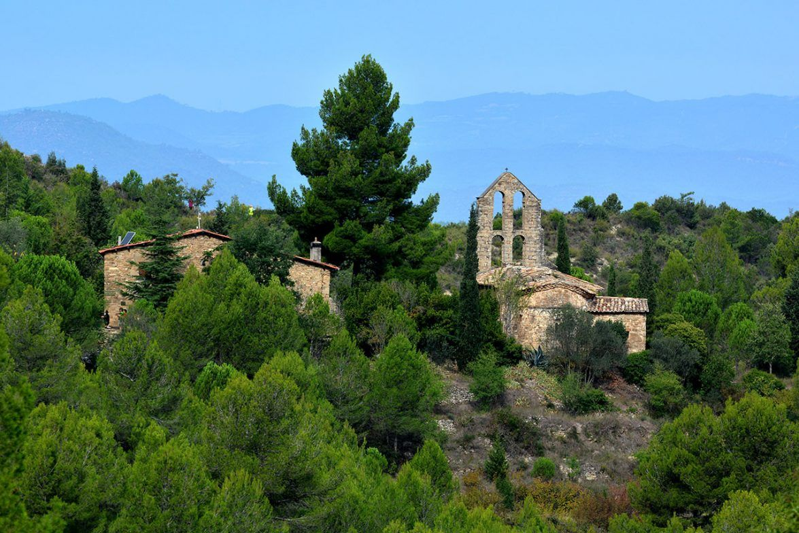
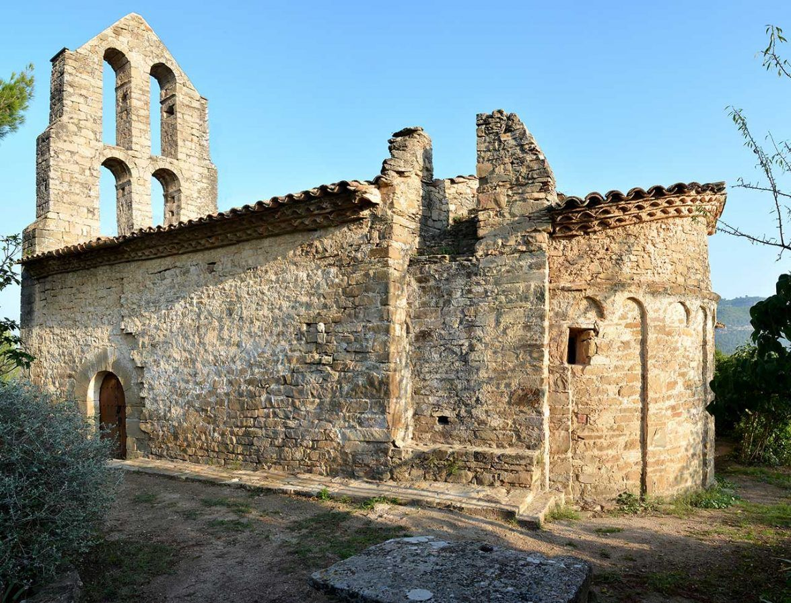
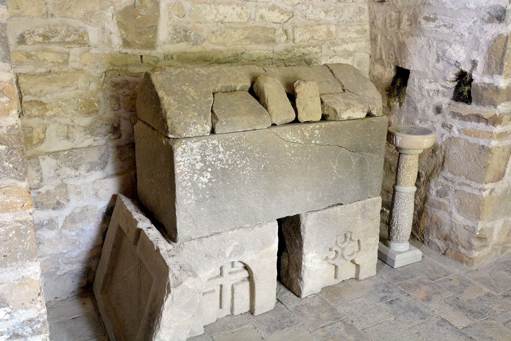
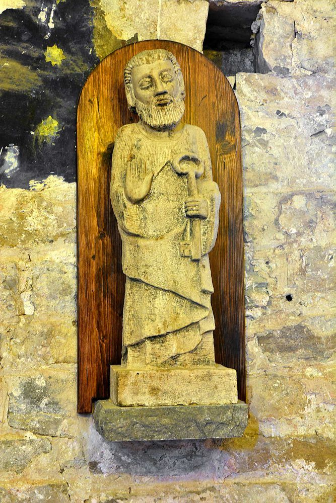
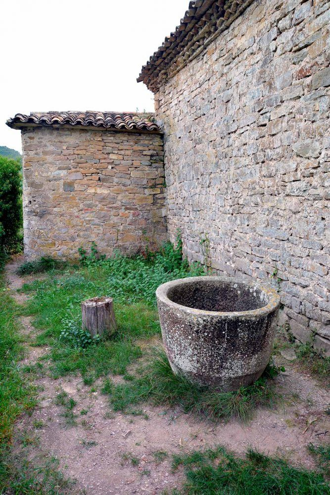
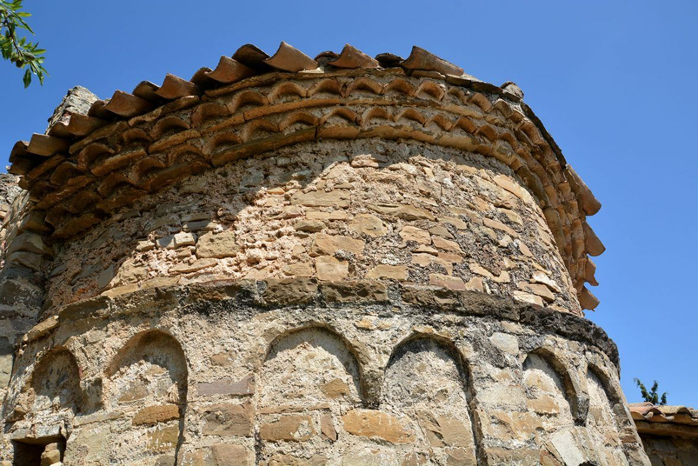
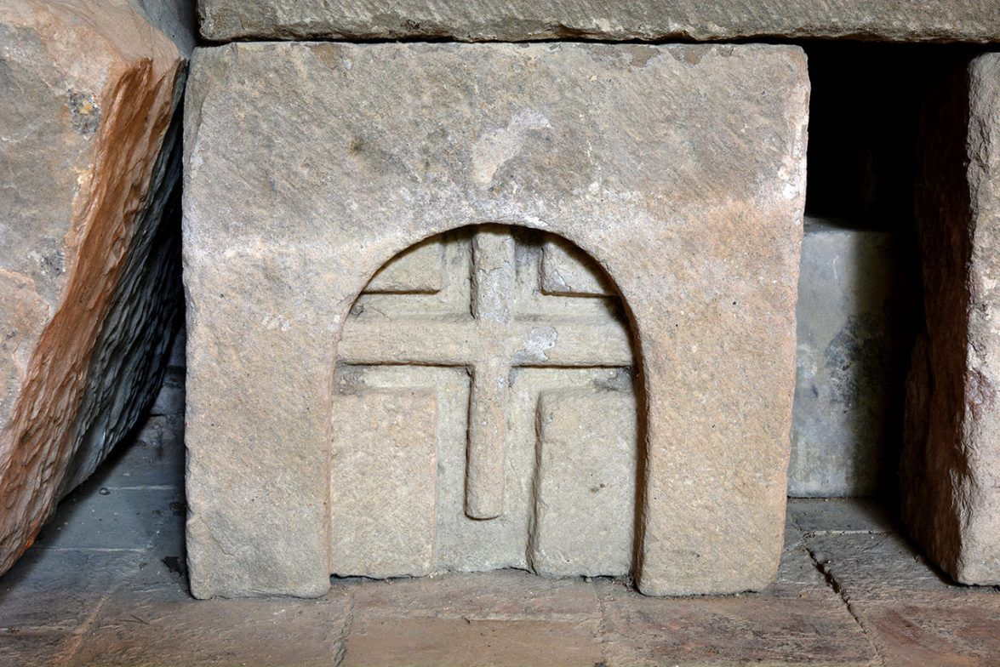
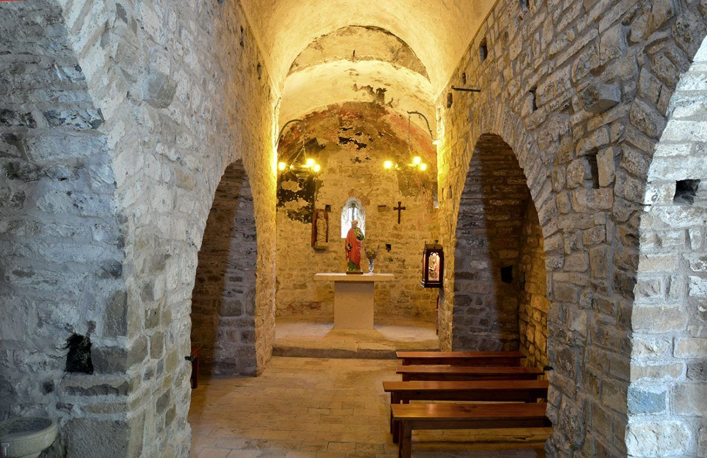

×


L'Ermita de Sant Pere de Vallhonesta és una petita església romànica que es troba a Sant Vicenç de Castellet, al Bages, just al vessant sud de la vall del torrent de Rubió. És un racó encantador que domina una zona plena d’història, envoltada de natura i amb vistes magnífiques. Aquesta ermita té els seus orígens al segle XI, quan feia de parròquia per als masos de Vallhonesta. La zona ja apareix documentada el 1115, amb els Guàrdia de Montserrat com a senyors feudals. Més endavant, al segle XIV, després de la devastadora pesta negra, va perdre el seu paper parroquial i va quedar com a sufragània de Sant Vicenç de Castellbell. Finalment, al segle XIX, va passar a dependre de Sant Vicenç de Castellet. L’edifici és un clar exemple del romànic català. Té una única nau amb un absis orientat a l’est, seguint la tradició d’aquella època. L’absis està decorat amb arcs llombards cecs i una finestra central d’arc de mig punt que li dona un toc especial. A la part de ponent, hi trobem el campanar d’espadanya, amb quatre obertures estilitzades que criden l’atenció. A dins, encara es conserva un sarcòfag de pedra d’època romànica. L’entorn de l’ermita és tranquil i convida a gaudir de la natura. De fet, Vallhonesta és una de les portes d’entrada al Parc Natural de Sant Llorenç del Munt i l’Obac, cosa que fa que sigui un punt de pas interessant per als amants del senderisme i de la història. Per arribar-hi, només cal agafar el camí de Vallhonesta des de Sant Vicenç de Castellet, una ruta senzilla que regala unes vistes espectaculars. A prop, també es pot visitar l’ermita de Sant Jaume de Vallhonesta i les restes de l’antic hostal de Sant Jaume. En definitiva, l’Ermita de Sant Pere de Vallhonesta és un petit tresor medieval que ens connecta amb el passat i ens permet gaudir d’un entorn natural que, tot i el pas dels segles, conserva la seva essència autèntica.